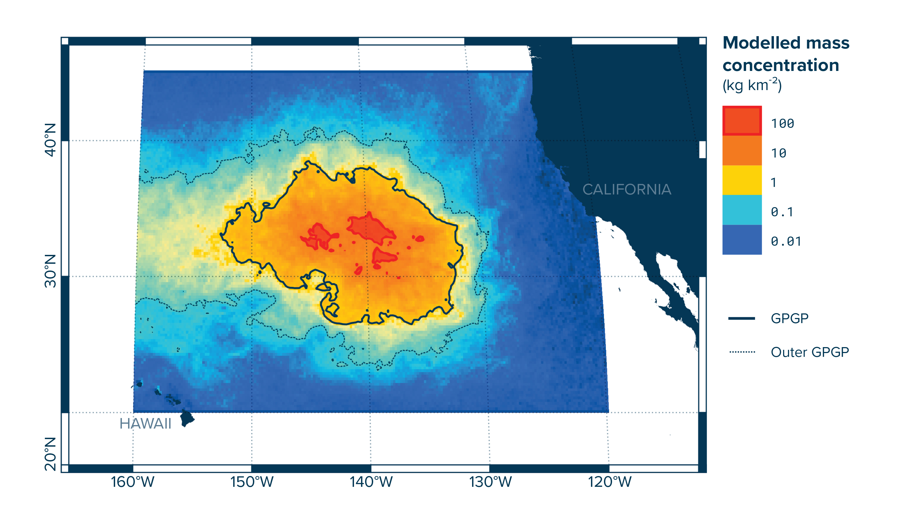
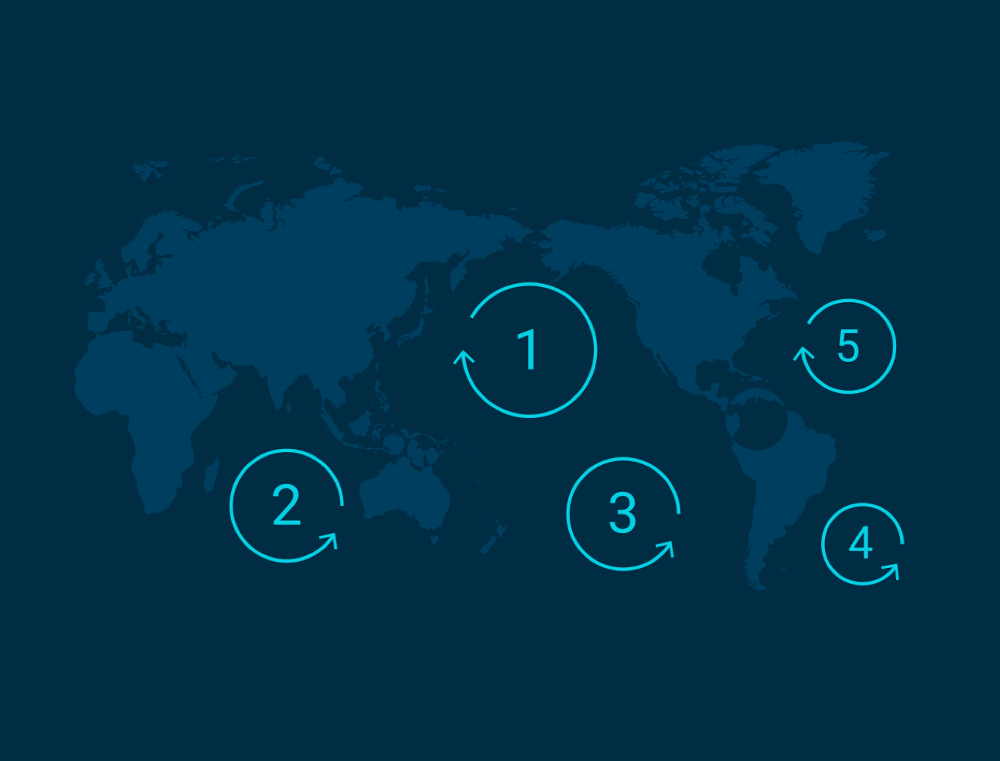
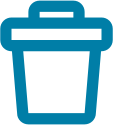
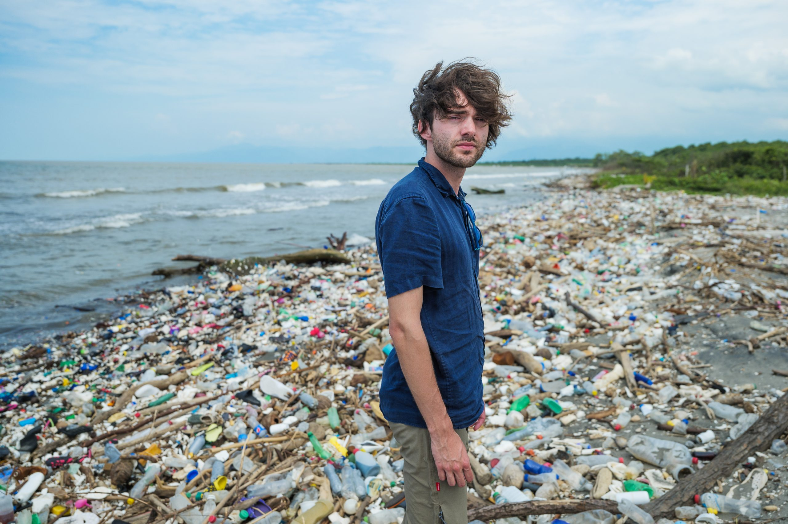
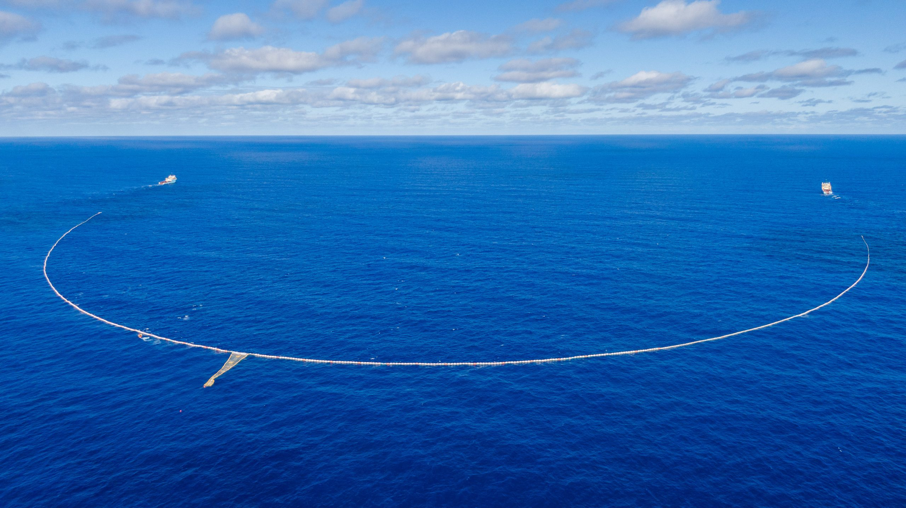

Pollution Mass Concentration Model of The Great Pacific Garbage Patch | Image Credit: The Ocean Cleanup
What, Where, and How?
The Great Pacific Garbage Patch is noted to be the largest pollution mass in the world in our oceans. And National Geographic estimates the size of this patch to reach an approximate 1.6 million square kilometers. The patch is located in the Pacific between Hawaii and California. This mass is an accumulation of different debris, plastics, and other discarded fishing material spread out over a large area.
The naming of the patch is said to be coined by Charles J. Moore in 1997 as he discovers trash in the area while on a ocean competition.
The Great Pacific Garbage patch is one patch out of five other large patches in the world's ocean. These "patches" are formed through the convergence of currents around the world known as gyres.

Globe Map of Ocean Gyres or Currents | Image Credit: The Ocean Cleanup
Why doesn't the plastic just sink to the bottom? Large amounts of plastic enter the ocean each year and some are less dense than water, so they float in the water instead of sinking to the bottom.
While it may seem like it floats in one giant mass, the "patch" isn't necessarily a complete island of trash, but a very large gathering of plastics spread throughout a large area.
Why Does This Concern Me?
Pollution in our oceans has negative impacts on wildlife and in our blue ecosystems. The plastics in the ocean can disrupt wildlife by trapping them like ghost nets on turtles or animals may confuse the microplastics in the ocean as food and ingest them.
According to The Ocean Cleanup's anaylsis, the is approximately 180 times more plastic than there is wildlife in the area. This shows how much of a large scale issue our human waste products pose on our ecosystems.
How does this affect humans? The microplastics being consumed by these animals may have chemicals that are now being digested. These toxic chemicals then are passed up the food chain to other animals and can end up in our food supply, this is known as bioaccumulation. These microplastics are designated to be under 0.5mm and most likely unnoticeable.
Pollution Facts

Approximately, 26 billion pounds of trash are dumped into the ocean every year.
For 10 years and counting this organization has been researching and developing ways to save our oceans from the onslaught of pollution in the ocean around the world.

Image of Boyan Slat Founder of The Ocean Cleanup | Image Credit: The Ocean Cleanup
The company was founded by a former student, Boyan Slat, in 2013 after wanting to dedicate his career to saving the oceans.Since its founding, the Ocean Cleanup has conducted several research projects and is currently, as of 2025, conducting its new System 03 cleanup project:

Image of System 03 Project Barrier | Image Credit: The Ocean Cleanup
Project is a 2.2 kilometer barrier that skims the ocean's surface for floating plastics.
The floating barrier is towed through the ocean by two vessels at a low speed, picking up plastics and funneling into a collection net.
Targets several hotspot areas to clean the area in the densest parts of the pollution.
Once the net barrier's funnel point is full, they empty the contents on the rig and sort the plastics for recycling.
This ongoing project is a large-scale solution to the immense problem that is ocean pollution. The Ocean Cleanup estimates that if they focus on targeting the “hotspots” of the patch, they can clean it within approximately 5 years and with less funds.
While the Ocean Cleanup organization is a large-scale solution to a never-ending problem like pollution. There are many ways we as a society can help in our own ways such as: